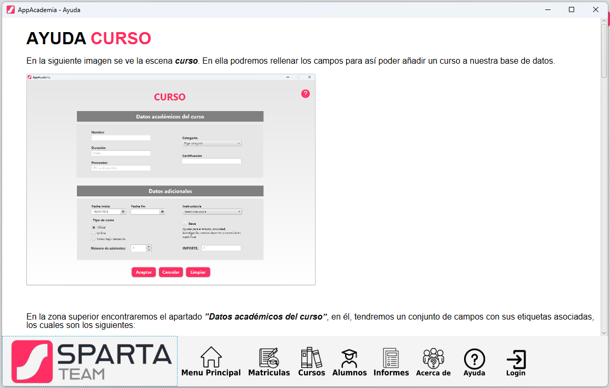

En este apartado mostraremos a grandes rasgos como funciona la ayuda de la aplicación.
Esta se mostrará en una ventana a parte y contendrá un menú en la parte inferior que hace referencia a la ayuda de cada apartado de la aplicación. También podemos encontrar el logo de la empresa al lado izquierdo del panel.
